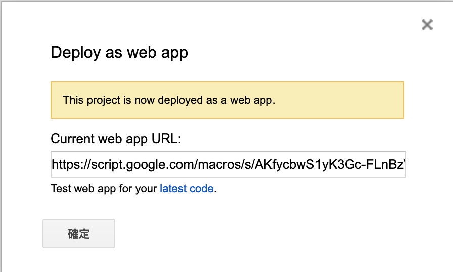

<!DOCTYPE html>
<html lang="en">
<head>
  <meta charset="UTF-8">
<meta name="viewport" content="width=device-width, initial-scale=1, maximum-scale=2">
<meta name="theme-color" content="#222">
<meta name="generator" content="Hexo 5.4.0">
  <link rel="apple-touch-icon" sizes="180x180" href="/images/apple-touch-icon-next.png">
  <link rel="icon" type="image/png" sizes="32x32" href="/images/favicon-32x32-next.png">
  <link rel="icon" type="image/png" sizes="16x16" href="/images/favicon-16x16-next.png">
  <link rel="mask-icon" href="/images/logo.svg" color="#222">

<link rel="stylesheet" href="/css/main.css">


<link rel="stylesheet" href="/lib/font-awesome/css/all.min.css">

<script id="hexo-configurations">
    var NexT = window.NexT || {};
    var CONFIG = {"hostname":"dasre.github.io","root":"/","scheme":"Mist","version":"7.8.0","exturl":false,"sidebar":{"position":"left","display":"post","padding":18,"offset":12,"onmobile":false},"copycode":{"enable":true,"show_result":false,"style":null},"back2top":{"enable":true,"sidebar":false,"scrollpercent":false},"bookmark":{"enable":false,"color":"#222","save":"auto"},"fancybox":false,"mediumzoom":false,"lazyload":false,"pangu":false,"comments":{"style":"tabs","active":null,"storage":true,"lazyload":false,"nav":null},"algolia":{"hits":{"per_page":10},"labels":{"input_placeholder":"Search for Posts","hits_empty":"We didn't find any results for the search: ${query}","hits_stats":"${hits} results found in ${time} ms"}},"localsearch":{"enable":false,"trigger":"auto","top_n_per_article":1,"unescape":false,"preload":false},"motion":{"enable":true,"async":false,"transition":{"post_block":"fadeIn","post_header":"slideDownIn","post_body":"slideDownIn","coll_header":"slideLeftIn","sidebar":"slideUpIn"}}};
  </script>

  <meta name="description" content="Google Apps ScriptGoogle Apps Script(GAS)是什麼，可以參考wiki的介紹。但我一般會把它解釋成一個後端，類似nodejs之類的。 在GAS裡面，你可以透過JavaScript去連接Google的各類服務，或是去連接Google的Firebase資料庫也是可以的。這邊我們會使用GAS來串接Google Sheets。 GAS連結Google表單要開啟GAS的編">
<meta property="og:type" content="article">
<meta property="og:title" content="使用Google Apps Script(GAS)串接Google Sheets">
<meta property="og:url" content="https://dasre.github.io/2020/03/16/GAS/index.html">
<meta property="og:site_name" content="Andy Blog">
<meta property="og:description" content="Google Apps ScriptGoogle Apps Script(GAS)是什麼，可以參考wiki的介紹。但我一般會把它解釋成一個後端，類似nodejs之類的。 在GAS裡面，你可以透過JavaScript去連接Google的各類服務，或是去連接Google的Firebase資料庫也是可以的。這邊我們會使用GAS來串接Google Sheets。 GAS連結Google表單要開啟GAS的編">
<meta property="og:locale" content="en_US">
<meta property="og:image" content="https://dasre.github.io/2020/03/16/GAS/api.png">
<meta property="article:published_time" content="2020-03-16T08:26:20.000Z">
<meta property="article:modified_time" content="2022-02-28T14:44:58.171Z">
<meta property="article:author" content="Andy Chen">
<meta property="article:tag" content="w3HexSchool">
<meta name="twitter:card" content="summary">
<meta name="twitter:image" content="https://dasre.github.io/2020/03/16/GAS/api.png">

<link rel="canonical" href="https://dasre.github.io/2020/03/16/GAS/">


<script id="page-configurations">
  // https://hexo.io/docs/variables.html
  CONFIG.page = {
    sidebar: "",
    isHome : false,
    isPost : true,
    lang   : 'en'
  };
</script>

  <title>使用Google Apps Script(GAS)串接Google Sheets | Andy Blog</title>
  


  <noscript>
  <style>
  .use-motion .brand,
  .use-motion .menu-item,
  .sidebar-inner,
  .use-motion .post-block,
  .use-motion .pagination,
  .use-motion .comments,
  .use-motion .post-header,
  .use-motion .post-body,
  .use-motion .collection-header { opacity: initial; }

  .use-motion .site-title,
  .use-motion .site-subtitle {
    opacity: initial;
    top: initial;
  }

  .use-motion .logo-line-before i { left: initial; }
  .use-motion .logo-line-after i { right: initial; }
  </style>
</noscript>

</head>

<body itemscope itemtype="http://schema.org/WebPage">
  <div class="container use-motion">
    <div class="headband"></div>

    <header class="header" itemscope itemtype="http://schema.org/WPHeader">
      <div class="header-inner"><div class="site-brand-container">
  <div class="site-nav-toggle">
    <div class="toggle" aria-label="Toggle navigation bar">
      <span class="toggle-line toggle-line-first"></span>
      <span class="toggle-line toggle-line-middle"></span>
      <span class="toggle-line toggle-line-last"></span>
    </div>
  </div>

  <div class="site-meta">

    <a href="/" class="brand" rel="start">
      <span class="logo-line-before"><i></i></span>
      <h1 class="site-title">Andy Blog</h1>
      <span class="logo-line-after"><i></i></span>
    </a>
  </div>

  <div class="site-nav-right">
    <div class="toggle popup-trigger">
    </div>
  </div>
</div>


<nav class="site-nav">
  <ul id="menu" class="main-menu menu">
        <li class="menu-item menu-item-home">

    <a href="/" rel="section"><i class="fa fa-home fa-fw"></i>Home</a>

  </li>
        <li class="menu-item menu-item-tags">

    <a href="/tags/" rel="section"><i class="fa fa-tags fa-fw"></i>Tags</a>

  </li>
        <li class="menu-item menu-item-archives">

    <a href="/archives/" rel="section"><i class="fa fa-archive fa-fw"></i>Archives</a>

  </li>
  </ul>
</nav>


</div>
    </header>

    
  <div class="back-to-top">
    <i class="fa fa-arrow-up"></i>
    <span>0%</span>
  </div>


    <main class="main">
      <div class="main-inner">
        <div class="content-wrap">
          

          <div class="content post posts-expand">
            

    
  
  
  <article itemscope itemtype="http://schema.org/Article" class="post-block" lang="en">
    <link itemprop="mainEntityOfPage" href="https://dasre.github.io/2020/03/16/GAS/">

    <span hidden itemprop="author" itemscope itemtype="http://schema.org/Person">
      <meta itemprop="image" content="/images/avatar.gif">
      <meta itemprop="name" content="Andy Chen">
      <meta itemprop="description" content="">
    </span>

    <span hidden itemprop="publisher" itemscope itemtype="http://schema.org/Organization">
      <meta itemprop="name" content="Andy Blog">
    </span>
      <header class="post-header">
        <h1 class="post-title" itemprop="name headline">
          使用Google Apps Script(GAS)串接Google Sheets
        </h1>

        <div class="post-meta">
            <span class="post-meta-item">
              <span class="post-meta-item-icon">
                <i class="far fa-calendar"></i>
              </span>
              <span class="post-meta-item-text">Posted on</span>

              <time title="Created: 2020-03-16 16:26:20" itemprop="dateCreated datePublished" datetime="2020-03-16T16:26:20+08:00">2020-03-16</time>
            </span>
              <span class="post-meta-item">
                <span class="post-meta-item-icon">
                  <i class="far fa-calendar-check"></i>
                </span>
                <span class="post-meta-item-text">Edited on</span>
                <time title="Modified: 2022-02-28 22:44:58" itemprop="dateModified" datetime="2022-02-28T22:44:58+08:00">2022-02-28</time>
              </span>

          
  
  <span class="post-meta-item">
    
      <span class="post-meta-item-icon">
        <i class="far fa-comment"></i>
      </span>
      <span class="post-meta-item-text">Disqus: </span>
    
    <a title="disqus" href="/2020/03/16/GAS/#disqus_thread" itemprop="discussionUrl">
      <span class="post-comments-count disqus-comment-count" data-disqus-identifier="2020/03/16/GAS/" itemprop="commentCount"></span>
    </a>
  </span>
  
  

        </div>
      </header>

    
    
    
    <div class="post-body" itemprop="articleBody">

      
        <h1 id="Google-Apps-Script"><a href="#Google-Apps-Script" class="headerlink" title="Google Apps Script"></a>Google Apps Script</h1><p>Google Apps Script(GAS)是什麼，可以參考<a target="_blank" rel="noopener" href="https://en.wikipedia.org/wiki/Google_Apps_Script">wiki</a>的介紹。但我一般會把它解釋成一個後端，類似nodejs之類的。</p>
<p>在GAS裡面，你可以透過JavaScript去連接Google的各類服務，或是去連接Google的Firebase資料庫也是可以的。這邊我們會使用GAS來串接Google Sheets。</p>
<h2 id="GAS連結Google表單"><a href="#GAS連結Google表單" class="headerlink" title="GAS連結Google表單"></a>GAS連結Google表單</h2><p>要開啟GAS的編輯器，可以從Google表單上方的工具列 <b>工具&gt;指令碼編輯器</b> 或是在 <b>Google雲端硬碟右鍵&gt;更多&gt;Google Apps Script（要先連結GAS應用程式）</b>，開啟後副檔名應該會是gs。</p>
<p>目前的GAS是可以使用es6語法的，但因為要做一些對應的設定，這邊我們會使用較舊的JavaScript語法撰寫。</p>
<figure class="highlight javascript"><table><tr><td class="gutter"><pre><span class="line">1</span><br><span class="line">2</span><br><span class="line">3</span><br><span class="line">4</span><br><span class="line">5</span><br><span class="line">6</span><br><span class="line">7</span><br><span class="line">8</span><br><span class="line">9</span><br><span class="line">10</span><br><span class="line">11</span><br><span class="line">12</span><br><span class="line">13</span><br><span class="line">14</span><br><span class="line">15</span><br><span class="line">16</span><br><span class="line">17</span><br><span class="line">18</span><br><span class="line">19</span><br><span class="line">20</span><br></pre></td><td class="code"><pre><span class="line"><span class="function"><span class="keyword">function</span> <span class="title">doPost</span>(<span class="params">e</span>) </span>&#123;</span><br><span class="line">  <span class="comment">//取得參數</span></span><br><span class="line">  <span class="keyword">var</span> params = <span class="built_in">JSON</span>.parse(e.postData.contents);</span><br><span class="line">  <span class="keyword">var</span> num = params.num;</span><br><span class="line">  <span class="keyword">var</span> one = params.one;</span><br><span class="line">  <span class="keyword">var</span> one_other = params.one_other;</span><br><span class="line">  <span class="keyword">var</span> boss_one = params.boss_one;</span><br><span class="line">  <span class="keyword">var</span> to = params.name;</span><br><span class="line">  <span class="keyword">var</span> date = params.date;</span><br><span class="line"> </span><br><span class="line">  <span class="comment">//sheet資訊</span></span><br><span class="line">  <span class="keyword">var</span> SpreadSheet = SpreadsheetApp.openById(<span class="string">&quot;&quot;</span>);</span><br><span class="line">  <span class="keyword">var</span> Sheet = SpreadSheet.getSheets()[<span class="number">0</span>];</span><br><span class="line">  </span><br><span class="line">  </span><br><span class="line">  <span class="comment">//setValue...</span></span><br><span class="line">  ...</span><br><span class="line"></span><br><span class="line">  <span class="keyword">return</span> ContentService.createTextOutput(params);</span><br><span class="line">&#125;</span><br></pre></td></tr></table></figure>

<p>上述我們撰寫了一個doPost的function。<br>doPost其實就是我們在Call這隻gs檔的API，進行post時會觸發的function。</p>
<p>我們可以先透過e這個參數取得post的資料。<br>接下來透過<code>SpreadsheetApp.openById(&quot;&quot;)</code>選擇要開啟哪個Google表單的檔案，再透過<code>SpreadSheet.getSheets()[0]</code>綁定好選擇的檔案裡面的哪張表(0表示第一張表)。</p>
<p>選擇好表後，就可以透過getRange()取得表的指定格子位置，並透過setValue()或setFormula()方法來將值存入。</p>
<p>最後的return則是要回傳什麼內容。</p>
<h2 id="GAS部署"><a href="#GAS部署" class="headerlink" title="GAS部署"></a>GAS部署</h2><p>在寫完GAS的code後，我們要部署並產生API。<br>選擇<b>發佈&gt;部署爲網路應用程式</b>，將具有應用程式存取權的使用者改爲 “Anyone, even anonymous“ ，並點選部署。</p>
<p>接下來第一次部署會出現權限核對的一些設定。<br>基本上就是<b>核對權限&gt;選擇自己的帳戶&gt;進階&gt;前往&gt;允許</b>。<br>點選完畢後會出現下圖<br></p>
<p>那串URL就是你的API路徑。</p>
<hr>
<h2 id="補充"><a href="#補充" class="headerlink" title="補充"></a>補充</h2><ul>
<li><p>在GAS內沒有console.log()，要使用Logger.log()</p>
</li>
<li><p>GAS的goGet()和doPost()方法，不能直接return一個object。但可以轉成JSON回傳，詳細可<a target="_blank" rel="noopener" href="https://developers.google.com/apps-script/guides/content">參考</a>。</p>
</li>
</ul>
<p></p>

    </div>

    
    
    
        

<div>
<ul class="post-copyright">
  <li class="post-copyright-author">
    <strong>Post author:  </strong>Andy Chen
  </li>
  <li class="post-copyright-link">
    <strong>Post link: </strong>
    <a href="https://dasre.github.io/2020/03/16/GAS/" title="使用Google Apps Script(GAS)串接Google Sheets">https://dasre.github.io/2020/03/16/GAS/</a>
  </li>
  <li class="post-copyright-license">
    <strong>Copyright Notice:  </strong>All articles in this blog are licensed under <a href="https://creativecommons.org/licenses/by-nc-sa/4.0/zh-tw" rel="noopener" target="_blank"><i class="fab fa-fw fa-creative-commons"></i>BY-NC-SA</a> unless stating additionally.
  </li>
</ul>
</div>


      <footer class="post-footer">
          <div class="post-tags">
              <a href="/tags/w3HexSchool/" rel="tag"># w3HexSchool</a>
          </div>

        


        
    <div class="post-nav">
      <div class="post-nav-item">
    <a href="/2020/03/10/Discord/" rel="prev" title="Discord Bot">
      <i class="fa fa-chevron-left"></i> Discord Bot
    </a></div>
      <div class="post-nav-item">
    <a href="/2020/03/23/Github/" rel="next" title="一電腦使用多組Github帳號設定">
      一電腦使用多組Github帳號設定 <i class="fa fa-chevron-right"></i>
    </a></div>
    </div>
      </footer>
    
  </article>
  
  
  


          </div>
          
    
  <div class="comments">
    <div id="disqus_thread">
      <noscript>Please enable JavaScript to view the comments powered by Disqus.</noscript>
    </div>
  </div>
  

<script>
  window.addEventListener('tabs:register', () => {
    let { activeClass } = CONFIG.comments;
    if (CONFIG.comments.storage) {
      activeClass = localStorage.getItem('comments_active') || activeClass;
    }
    if (activeClass) {
      let activeTab = document.querySelector(`a[href="#comment-${activeClass}"]`);
      if (activeTab) {
        activeTab.click();
      }
    }
  });
  if (CONFIG.comments.storage) {
    window.addEventListener('tabs:click', event => {
      if (!event.target.matches('.tabs-comment .tab-content .tab-pane')) return;
      let commentClass = event.target.classList[1];
      localStorage.setItem('comments_active', commentClass);
    });
  }
</script>

        </div>
          
  
  <div class="toggle sidebar-toggle">
    <span class="toggle-line toggle-line-first"></span>
    <span class="toggle-line toggle-line-middle"></span>
    <span class="toggle-line toggle-line-last"></span>
  </div>

  <aside class="sidebar">
    <div class="sidebar-inner">

      <ul class="sidebar-nav motion-element">
        <li class="sidebar-nav-toc">
          Table of Contents
        </li>
        <li class="sidebar-nav-overview">
          Overview
        </li>
      </ul>

      <!--noindex-->
      <div class="post-toc-wrap sidebar-panel">
          <div class="post-toc motion-element"><ol class="nav"><li class="nav-item nav-level-1"><a class="nav-link" href="#Google-Apps-Script"><span class="nav-number">1.</span> <span class="nav-text">Google Apps Script</span></a><ol class="nav-child"><li class="nav-item nav-level-2"><a class="nav-link" href="#GAS%E9%80%A3%E7%B5%90Google%E8%A1%A8%E5%96%AE"><span class="nav-number">1.1.</span> <span class="nav-text">GAS連結Google表單</span></a></li><li class="nav-item nav-level-2"><a class="nav-link" href="#GAS%E9%83%A8%E7%BD%B2"><span class="nav-number">1.2.</span> <span class="nav-text">GAS部署</span></a></li><li class="nav-item nav-level-2"><a class="nav-link" href="#%E8%A3%9C%E5%85%85"><span class="nav-number">1.3.</span> <span class="nav-text">補充</span></a></li></ol></li></ol></div>
      </div>
      <!--/noindex-->

      <div class="site-overview-wrap sidebar-panel">
        <div class="site-author motion-element" itemprop="author" itemscope itemtype="http://schema.org/Person">
  <p class="site-author-name" itemprop="name">Andy Chen</p>
  <div class="site-description" itemprop="description"></div>
</div>
<div class="site-state-wrap motion-element">
  <nav class="site-state">
      <div class="site-state-item site-state-posts">
          <a href="/archives/">
        
          <span class="site-state-item-count">35</span>
          <span class="site-state-item-name">posts</span>
        </a>
      </div>
      <div class="site-state-item site-state-tags">
            <a href="/tags/">
          
        <span class="site-state-item-count">9</span>
        <span class="site-state-item-name">tags</span></a>
      </div>
  </nav>
</div>
  <div class="links-of-author motion-element">
      <span class="links-of-author-item">
        <a href="https://github.com/Dasre" title="GitHub → https:&#x2F;&#x2F;github.com&#x2F;Dasre" rel="noopener" target="_blank"><i class="github fa-fw"></i>GitHub</a>
      </span>
      <span class="links-of-author-item">
        <a href="mailto:an5566x@gmail.com" title="E-Mail → mailto:an5566x@gmail.com" rel="noopener" target="_blank"><i class="envelope fa-fw"></i>E-Mail</a>
      </span>
  </div>
  <div class="cc-license motion-element" itemprop="license">
    <a href="https://creativecommons.org/licenses/by-nc-sa/4.0/zh-tw" class="cc-opacity" rel="noopener" target="_blank"></a>
  </div>


      </div>

    </div>
  </aside>
  <div id="sidebar-dimmer"></div>


      </div>
    </main>

    <footer class="footer">
      <div class="footer-inner">
        

        

<div class="copyright">
  
  &copy; 
  <span itemprop="copyrightYear">2022</span>
  <span class="with-love">
    <i class="fa fa-heart"></i>
  </span>
  <span class="author" itemprop="copyrightHolder">Andy Chen</span>
</div>

        


      </div>
    </footer>
  </div>

  
  <script src="/lib/anime.min.js"></script>
  <script src="/lib/velocity/velocity.min.js"></script>
  <script src="/lib/velocity/velocity.ui.min.js"></script>

<script src="/js/utils.js"></script>

<script src="/js/motion.js"></script>


<script src="/js/schemes/muse.js"></script>


<script src="/js/next-boot.js"></script>


  


  

  

<script>
  function loadCount() {
    var d = document, s = d.createElement('script');
    s.src = 'https://Dasre-blog.disqus.com/count.js';
    s.id = 'dsq-count-scr';
    (d.head || d.body).appendChild(s);
  }
  // defer loading until the whole page loading is completed
  window.addEventListener('load', loadCount, false);
</script>
<script>
  var disqus_config = function() {
    this.page.url = "https://dasre.github.io/2020/03/16/GAS/";
    this.page.identifier = "2020/03/16/GAS/";
    this.page.title = "使用Google Apps Script(GAS)串接Google Sheets";
    };
  NexT.utils.loadComments(document.querySelector('#disqus_thread'), () => {
    if (window.DISQUS) {
      DISQUS.reset({
        reload: true,
        config: disqus_config
      });
    } else {
      var d = document, s = d.createElement('script');
      s.src = 'https://Dasre-blog.disqus.com/embed.js';
      s.setAttribute('data-timestamp', '' + +new Date());
      (d.head || d.body).appendChild(s);
    }
  });
</script>

</body>
</html>
